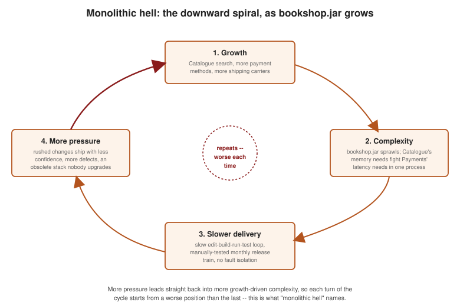

Benefits and Drawbacks of Microservices
|
This content was generated with the assistance of AI and should be verified against the official documentation before being relied on in production. |
Architectural Styles defined the monolith, the modular monolith, and microservices; this page argues each side of the trade-off concretely, with Bookshop as the running example — the same single Spring Boot 4.1 monolith fronting Catalogue, Orders, Payments, Shipping, and Customers used throughout this section. Neither style is universally "better"; the point of this page is to name what each one is actually buying, and what it is actually costing, so Choosing: Monolith or Microservices? can turn those trade-offs into a decision.
The monolith is genuinely good while Bookshop is small
Early on, when Bookshop is one small team building an MVP, the monolithic style is not a compromise — it is the right choice on its own merits:
-
Simple to develop. One IDE project, one build, no service-to-service contracts to design up front; an IDE’s full toolchain (refactoring, debugging, "find usages") works across the whole codebase at once.
-
Easy to make radical changes. Moving a field from
Orderto a newShipmententity, or renaming a package, is a single, atomic, compiler-checked commit — there is no second service whose contract might break. -
Simple to test and deploy. One test suite exercises the whole application in one run; one build produces one artifact (
bookshop.jar) that is deployed as a single unit, with no cross-service version matrix to reason about. -
Easy X-axis scaling. Per the scale cube, cloning the whole monolith behind a load balancer is enough for a long time — there is nothing microservices-specific needed to handle Bookshop’s early traffic growth.
Monolithic hell: the same monolith after two years of growth
As Bookshop’s team, codebase, and traffic grow, the same properties that made the monolith easy start working in reverse — a pattern Richardson calls monolithic hell:
-
Complexity intimidates developers.
bookshop.jarhas grown from a handful of packages to dozens; a developer joining the Payments team still has to understand enough of Catalogue and Shipping to be confident a change will not break them, because everything shares one process and one compilation unit. -
The edit-build-run-test loop slows down. A full rebuild and startup of
bookshop.jarnow takes minutes instead of seconds, and the test suite — still one suite for the whole application — takes long enough that developers stop running it locally before every commit. -
The path from commit to production gets longer. What used to be same-day deploys becomes a monthly release train: every change, however small, has to wait for a full regression pass of manual testing across every capability, because no one can be sure a Catalogue change did not somehow affect Payments.
-
Conflicting resource requirements make scaling hard. Catalogue’s full-text search index is memory-hungry; Payments' authorization calls are CPU-light but latency-sensitive and must never be starved. Because both run inside the same
bookshop.jarprocess on the same instance type, there is no way to give Catalogue more memory without also over-provisioning memory nobody needs for Payments, or to isolate Payments from a garbage-collection pause triggered by Catalogue’s indexing load. -
No fault isolation. A memory leak in Catalogue’s search indexing eventually takes down the whole
bookshop.jarprocess — Payments and Checkout go down with it, even though nothing about them was ever broken. -
Locked into an increasingly obsolete stack. Adopting a new library, framework version, or even a new JVM version means testing and migrating the entire application at once; the cost of that all-or-nothing upgrade means Bookshop’s team keeps deferring it, and the gap to current tooling keeps widening.

Benefits of microservices
Splitting Bookshop into independently deployable services directly addresses monolithic hell:
-
Continuous delivery and deployment. Once
bookshop-catalogueis its own service, its team can ship a search-ranking fix the same day it is written, without waiting for — or risking — Bookshop’s monthly release train. -
Small, easily maintained services.
bookshop-paymentsalone is small enough for a new engineer to understand end to end in a day, unlike the sprawlingbookshop.jarit was extracted from. -
Independent deployability.
bookshop-orderscan deploy ten times a day whilebookshop-shippingdeploys once a week, each on its own schedule, without either one blocking the other. -
Independent scalability.
bookshop-catalogueis scaled for CPU and memory (more, bigger instances for its search index);bookshop-paymentsis scaled for reliability (multiple availability zones, aggressive health checks) rather than raw throughput — exactly the conflicting requirements the monolith could not satisfy at the same time. -
Autonomous, "two-pizza" teams. A single small team can own
bookshop-shippingend to end — its code, its database, its on-call rotation, its release calendar — without needing sign-off from every other team touchingbookshop.jar. -
Easy experimentation with new technology. Bookshop’s Recommendations service (born outside the monolith from day one, per the "stop digging" strategy in Migration Path: From a Monolith to Microservices) can be written in Kotlin to try a new stack, without risking the stability of the rest of the system the way rewriting a chunk of
bookshop.jarin a new language would. -
Fault isolation. A memory leak inside
bookshop-cataloguenow crashes onlybookshop-catalogue;bookshop-paymentskeeps authorizing charges normally while Catalogue’s pods restart.
Inconveniences of microservices
None of this comes free. Splitting Bookshop into services introduces problems the monolith never had:
-
Finding the right set of services is hard, and it is easy to get wrong in either direction: too coarse and the benefits above barely materialize; too fine and the services barely communicate without excessive chatter. Getting the boundaries wrong in a way that leaves services tightly coupled produces exactly the distributed monolith anti-pattern — all of the network overhead, none of the independent deployability.
-
Distributed systems are inherently more complex. A method call inside
bookshop.jarbecomes inter-process communication (IPC) over the network oncebookshop-orderscallsbookshop-payments: it can now fail partially, arrive late, or arrive twice, sobookshop-ordersneeds retries, timeouts, and a circuit breaker around that call where an in-process method call needed none of them (see Resilience Fundamentals). -
Loss of ACID transactionality. A checkout that used to be one local database transaction across Order, Payment, and Shipment rows now spans three separate services and three separate databases; there is no single commit that covers all of them. Why Distributed Transactions Don’t Work Across Microservices explains why two-phase commit is not the answer, Sagas shows how Bookshop instead sequences local transactions with compensations under eventual consistency, and CQRS covers how a query that used to be a single SQL join across Order and Catalogue tables becomes API composition or a dedicated read model once those tables live in different services' databases.
-
Higher complexity and much more code and infrastructure to maintain, per service, that a monolith never needed at all:
-
A service chassis — the cross-cutting configuration (health checks, externalized config, graceful shutdown) every one of
bookshop-catalogue,bookshop-orders,bookshop-payments,bookshop-shipping, andbookshop-customersneeds, instead of configuring it once forbookshop.jar. -
Observability across five independent processes instead of one, via Metrics and Observability: Micrometer, Actuator, and Distributed Tracing — metrics, logs, and distributed traces now have to be correlated across services to answer a question a single in-process stack trace used to answer for free.
-
Service discovery and a gateway so that
bookshop-orderscan findbookshop-paymentsat a stable address and external clients have one entry point instead of five, covered in API Gateway and Backends for Frontends. -
Per-service build and deployment pipelines, five of them instead of one, each needing its own CI configuration, versioning, and rollout strategy.
-
Contract tests between
bookshop-ordersandbookshop-paymentsso a change to one does not silently break the other at runtime — a category of test the monolith’s compiler made almost unnecessary. -
Security tokens propagated across every call between services instead of a single in-process security context, per Choosing an OAuth Flow.
-
Distributed, globally unique identifiers for entities like
OrderIdthat used to come for free from one shared database’s auto-increment column, per Distributed ID Generation.
-
-
Coordinated cross-service feature rollouts. A feature that touches both Orders and Payments now needs its two halves released in a compatible order (or behind a feature flag) instead of landing in one atomic commit.
-
A higher operational and skills bar. Running five services well needs container orchestration, service mesh or gateway operational knowledge, and distributed-tracing literacy that a single-JAR monolith never demanded of the team.
-
Deciding when to adopt microservices is itself hard. The inconveniences above are real costs paid starting on day one, while the benefits mostly compound later, as the team and codebase grow — which is exactly the timing question Choosing: Monolith or Microservices? takes on next.
Monolith vs. microservices, side by side
| Dimension | Monolith | Microservices |
|---|---|---|
Development speed (small team) |
Fast — one codebase, one IDE project |
Slower up front — service boundaries and contracts must be designed |
Deployment unit |
One artifact, one deploy |
Many independently deployable services |
Deployability |
Coordinated releases; the whole app ships together |
Independent deployability per service |
Scalability |
X-axis cloning only; conflicting per-capability resource needs share one process |
Independent scalability per service, on any scale-cube axis |
Fault isolation |
None — one crash can take the whole app down |
A failing service degrades, not the whole system |
Team autonomy |
Shared codebase, shared release calendar |
Small, autonomous, "two-pizza" teams per service |
Transactions |
Local ACID transactions across the whole domain |
Sagas, eventual consistency, no cross-service joins |
Testing |
One test suite covers the whole application |
Per-service tests plus contract tests between services |
Operational complexity |
One process, one deployment pipeline |
Service chassis, discovery, gateway, per-service pipelines, distributed tracing |
Technology flexibility |
One shared stack for the whole application |
Each service can pick its own stack (e.g. Recommendations in Kotlin) |